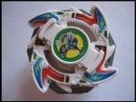

Dragoon V (Türkçe)
| Dragoon Victory | |
|  | |
| Number: | A-41 |
|---|---|
| System: | 5-Layer/Magnecore |
| Type: | Sald?r? |
Contents
Sald?r? Çemberi (AR): Eight Attacker
- Weight:
Dragoon V?nin Sald?r? Çemberi, sola dönü?lü Smash Attack için dizayn edilmi?tir. Ancak, Eight Spiker (Dragoon G) ç?kt???ndan beri kullan??l?l???n? yitirmi?tir (tabi en belirgin örnek Dragoon G, daha ba?ka Çemberler de i? görmektedir). Ayr?ca, sivri uçlar?n aras?ndaki bo?luklar, sald?r?n?n geri tepmesi halinde Smash Sald?r?s?n?n gereksiz olabilece?ini gösterir. Bu Sald?r? Çemberi, sadece elinizde daha iyi bir alternatif yoksa kullan?lmal?d?r.
A??rl?k (WD): 10 Wide
Daha Fazla Bilgi ?çin: Ten Wide
Dönü? Mekanizmas? (SG): Neo Sola Dönü? Mekanizmas? (Metal Weight Version)
Daha Fazla Bilgi ?çin: Neo Sola Dönü? Mekanizmas?
Blade Omurgas? (BB): Magne Flat Base
- Weight:
Blade Omurgas?n?n üzerinden ç?kan dört tane kanat bulunmaktad?r. Bu kanatlar sola dönü?lü Smash Sald?r?s? için tasarlanmas?na kar??n geri tepme olas?l???ndan dolay? bu amaçla kullan?lmamaktad?r. Magne Flat Base parças?, Customize Grip (Dragoon V2) taraf?ndan rafa kald?r?lm??t?r; bu da Smash Attack?i farkl? ?ekilde kullanmas?ndan kaynaklan?r. Customize Grip, Fin Tector (Draciel V2) gibi destek parçalar? ile kullan?labilir, ayn? zamanda de?i?ik tipte uçlar ile kullan?labilir. ?ki omurga da düz manyetik uçlara sahiptir, ama Dragoon V?nin ucu daha serttir ve lastikten ziyade plasti?e daha yak?n bir kaplamas? vard?r. Bunun avantaj? ise ucun Dragoon V2?nin ucundan daha dayan?kl? olmas? yönündedir, burada da feda edilecek etken h?z faktörüdür.
Smash Attack Karmalar?nda
- AR: Triple Wing (Trygle)
- WD: Wide Defense
- SG: Neo Right SG
- SP: Fin Tector (Draciel V2)
- BB: Customize Grip (Dragoon V2)(Dragoon V's tip)
Bu karma, kullan?lan ucun yüksekli?ini Destek Parças? eklenebilen bir Omurga ile kapat?yor. Fin Tector ve Triple Wing bu karmaya çok iyi bir Smash deste?i verirken ayn? zamanda bu karma daha a??r, ve ço?u karmaya k?yasla kontrol edilmesi daha kolay bir hale gelmektedir.
File:Doofues/Desktop/dragoonv.jpg
Sonuç
Dragoon V sadece Neo Sol SG kenarlar? ve 10 Wide için almaya de?er bir Beyblade. Bu modelin ucu da ayn? zamanda i?e yarar olabilir, ama piyasada gereken yard?m? tam olarak sa?layacak parçalar bulunmakta (Dragoon V2); dolay?s?yla bu etmenler bir Dragoon V almadan önce göz önünde bulundurulmal?. Ek olarak, Neo Sol SG kenarl?klar? Zombie/Dönü? gücü çalan karmalar için baz?lar? için önem ta??yabilir. Bu Beyblade kullan??l?d?r, ancak kesinlikle al?nmas?n? gerektirecek özellikleri yoktur.